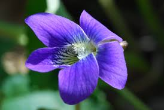

Welcome to The Outdoors Spot!
This website is all about Hunting and Fishing! The goal about this page is for you to learn something new. It even contains resourceful links to the Wisconsin DNR homepage. It is the best place to find answers to questions you have related to wildlife. And it has rules you should read up on if you are new to hunting or fishing. You can even enroll yourself in ATV safety classes, boaters safety, hunters education, and other important classes!

Wisconsin's State Animal, the badger!
Wisconsin's State Flower, the wood violet!